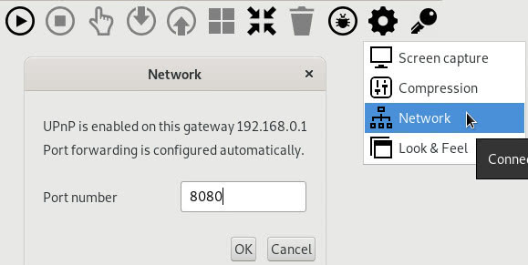
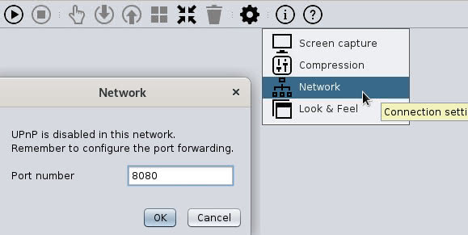
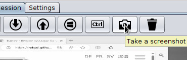
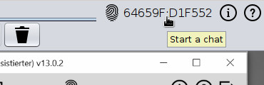
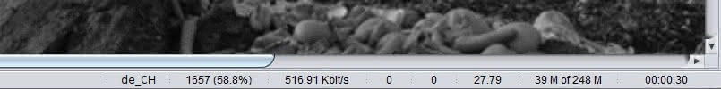

Komma igång
Vanligtvis kommunicerar hjälpgivaren med hjälpmottagaren via Jitsi, telefon, chat eller vad de nu gillar bäst. Genom att starta Dayon! så kan hjälpgivaren se skärmen och styra hjälpmottagarens dator.
I den här dokumentationen visar skärmdumpen den engelska språkversionen av programmet. Programmet är också språkanpassat till franska, tyska, spanska, ryska och svenska. Den återgår till engelska om det konfigurerade användarspråket inte är något av ovanstående.
Observera: Denna dokumentation hänvisar till den senaste programversionen.
 Att använda hjälpgivarens dator
Att använda hjälpgivarens dator
Dayon! Hjälpgivare agerar som en typisk serverapplikation (som hjälptagaren ansluer till) och därför behöver du konfigurera ditt nätverk så att hjälpgivaren kan bli synlig för yttervärlden.
Servern lyssnar som standard på Port 8080, men du kan ändra det om det skulle behövas.
Alltsedan version 12 skapar Dayon! portmappningsregeln (port forward) åt dig. Förutsättningen är att UPnP är aktiverat i ditt nätverk.
Annars måste portmappning (port forward) ändå ske, (TCP) via NAT på routern till datorn.
Kolla in portforward.com för en steg-för-steg guide för de vanligaste routermodellerna.
Valfritt: Ändra port för inkommande anslutningar: (till vänster med UPnP, till höger utan UPnP)
 
Skapa en anslutningsnyckel genom att klicka på nyckeln:

Kopiera den skapade anslutningsnyckeln till urklipp med ett musklick:

Det var allt - meddela anslutningsnyckeln till hjälptagaren via epost, chat eller telefon.
För den otålige: Här får du lära dig hur du får hjälpgivaren att lyssna efter inkommande anslutningar.
Alternativ variant: anslut utan anslutningsnyckel
Om du inte vill generera en åtkomsttoken måste du bestämma vilken IP-adress du vill meddela hjälptagaren för att ansluta till hjälpgivaren; du ska normalt sett ange din publika IP-adress. Men för att testa inom ditt lokala nätverk kanske du vill använda ett annat. Du kan hämta din publika IP-adress genom att klicka på nätverksknappen:

Som du kan se i den följande bilden, så innehåller menyn alternativet "kopiera till urklipp" redan IP-adressen och Porten. Det gör att det är lätt att klistra in det i en chat session (t.ex. Jitsi) eller till ett e-postmeddelande.

Observera att denna IP-adress inte är ett krav, då hjälpgivaren lyssnar på alla tillgängliga nätverksanslutningar; men du behöver meddela det till hjälptagaren ändå (mer om det senare).
Det var allt vad gäller nätverksinställningar;
För den otålige: Här lär du dig hur du får hjälpgivaren att lyssna efter inkommande anslutningar.

Nu kan du be hjälptagaren att ansluta. Strax därefter kommer du att bli ombedd att acceptera den inkommande anslutningen:

Du är nu ansluten och övervakar den andra datorn på distans. Glöm inte att jämföra hjälpgivarens och hjälptagarens fingeravtryck.
Varning: Om de inte visar samma fingeravtryck på båda datorerna så är anslutningen inte pålitlig!
 Att använda hjälptagarens dator
Att använda hjälptagarens dator
Dayon! Hjälptagare är en klientapplikation som anropar yttervärlden. Därför behövs ingen särskild nätverkskonfigurering göras för att kunna installera och använda programmet.
Ladda ned och installera Dayon!. Starta sedan Dayon! Hjälptagare (du borde ha en genväg på skrivbordet) och klicka "play"-knappen uppe till vänster.

Ange anslutningsnyckeln som hjälpgivaren gett dig och bekräfta med OK:

(om du redan anslutit till denna hjälpgivare nyligen, så kan du lämna fältet tomt)
Alternativ variant: anslut utan anslutningsnyckel
Ange både den IP-adress och den port som hjälpgivaren gett dig och bekräfta med OK:

(båda fälten kan rensas genom att dubbelklicka i dem)
Du kommer att anslutas till hjälpgivaren inom kort, som sedan kan se din skärm. Grattis!

Obs: Om du inte kan ansluta genom att följa instruktionerna ovan bör du kontrollera att du har rätt inställningar.
Hantera sessionen
Om skärmbilden hos hjälptagaren inte ryms i ditt fönster, så kan det anpassas till ditt fönster:

Genom att klicka på knappen  ,
behåller du bildförhållandet från hjälptagarens skärm. Observera att denna funktion inte har någon effekt när fönstret hos hjälpgivaren är maximerat.
,
behåller du bildförhållandet från hjälptagarens skärm. Observera att denna funktion inte har någon effekt när fönstret hos hjälpgivaren är maximerat.
Som standard är distanskontroll av; du kan växla mellan av och på med följande knapp:

Urklippsöverföring
Genom att klicka på upp- eller ned-pilen, så kan antingen hjälpgivarens urklipp överföras till hjälptagaren (upp) eller hjälptagarens urklipp överföras till hjälpgivaren (ned).

Nuvarande stöd:
-
Text: Välj lokal text eller i hjälptagarens fönster, kopiera (
Ctrl + c), klicka upp eller ned. Därefter kan den överförda texten klistras in i en applikation lokalt eller på distans (Ctrl + v). -
Filer: Välj en eller flera filer lokalt eller i hjälptagarens bildskärm (
Ctrl + c), klicka upp eller ned. Därefter kan de(n) klistras in i sin destination. - Grafik: Om urklippets innehåll är en grafik, t.ex. efter att du tagit en skärmdump - klicka bara uppåt eller nedåt. Urklippstavlan som innehåller grafiken kan sedan användas i destinationen.
Att överföra en tryckning på Windows- eller Cmd-tangenten
För att överföra ett tryck på *Windows-tangenten, så musklicka på Windowssymbolen i hjälpgivarens kontrollpanel:

Tangenten fortsätter att vara intryckt till dess att du klickar på Windowssymbolen igen. Det ger dig möjligheten att överföra snabbkommandon som innehåller Windows-tangenten.
Om du exemplvis behöver minimera alla fönster hos hjälptagaren, så klickar du på Windowssymbolen, trycker på M-tangenten på ditt tangentbord och sedan klickar du på Windowssymbolen igen.
*Notera: Om hjälptagaren kör macOS visas/överförs Cmd-knappen/tangenten istället.
Att överföra en tryckning på Ctrl-tangenten
Oftast överförs Ctrl-tangenten till hjälptagaren på samma sätt som alla andra tangenttryckningar,
tryck sedan på tangenterna Alt och Delete samtidigt, släpp dem och klicka slutligen på knappen [Ctrl] igen.
Men inte alltid: till exempel blir kombinationen Ctrl + Alt + Delete "fångad" av hjälpgivarens operativsystem och överförs därmed inte.
Vid sådana tillfällen är [Ctrl]-knappen (bredvid Windows-knappen) hos hjälpgivaren praktisk att ha.
Funktionen är densamma som för Windows-knappen: tangenten förblir nedtryckt tills du klickar på knappen igen.
Så för att skicka tangentkombinationen Ctrl + Alt + Delete till hjälptagaren, måste du först klicka på knappen [Ctrl],
sedan trycka ned tangenterna Alt och Delete samtidigt, därefter släppa dem och slutligen klicka på knappen [Ctrl] igen.
Varning: På grund av begränsningar i Windows skickas inte kombinationen Ctrl + Alt + Del till
hjälptagare!
Använd istället tangentkombinationen Windows + R som ger motsvarande funktionalitet.
Ta en skärmdump hos den hjälptagaren
Klicka på knappen "kamera" - skärmdumpen tas direkt. Bilden hamnar i hjälptagarens urklipp, varifrån den kan överföras till hjälpgivaren.

Återställ skärmbild
Återställ skärminspelning (papperskorgsikon) återställer inspelningsintervallet (tick) till det konfigurerade, rensar alla cachade skärmdata och laddar en ny skärminspelning från assisterad.
Starta ett onlinemöte
Klicka på certifikatets fingeravtryck hos både hjälptagaren och hjälpgivare för att starta ett gemensamt onlinemöte i Jitsi Meeting.

Mätare
Statusfältet i nederkanten av hjälpgivarens fönster visar, utöver tangentbordets språklayout, ett antal mätare.
- Bandbreddsanvändning
- Kompressionsgrad: hur många gånger urpsprungsbilden (dess förändringar) har komprimerats
- Antal mottagna sektioner: antalet sektioner som överförts och träffprocent för cache.
- Antal skippade skärmbilder: antalet avläsningar som har skippats pga. för högt värde för CPUn (dvs för lågt satt tick). För att minska antalet så behöver du öka tick för att inte avläsa skärmen lika ofta.
- Antal sammanfogade skärmbilder: antalet avläsningar som har sammanfogats innan de överförts. Detta beror på att tick satts för lågt för den valda komprimeringsmetoden. För att minska värdet så behöver du öka tick för att inte avläsa skärmen lika ofta eller byta till en snabbare komprimeringsmetod.
- Använt minne av totalt tillgängligt
- Sessionslängd för aktiv anslutning eller den senaste anslutningen